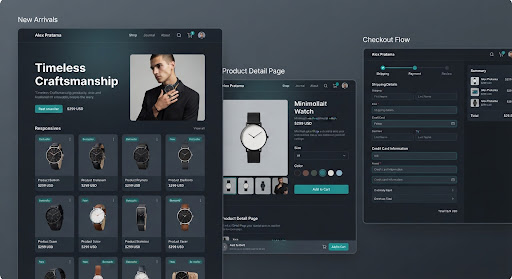
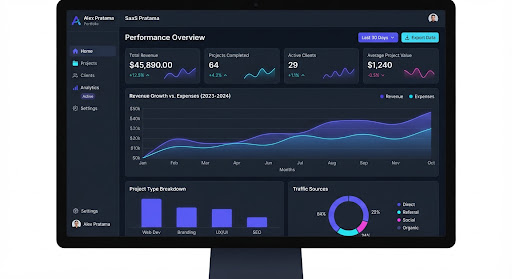
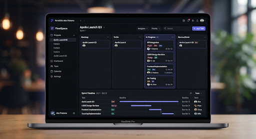
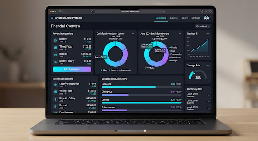

Code Tracing
Analisis bug report QA, penelusuran logika MVC, dan perbaikan kode Laravel secara kolaboratif.
Saya Bayuaji Wahyu Pratama — Web Developer di Yogyakarta. Lulusan Sistem Informasi dengan fokus PHP, Python, database relasional, integrasi API, serta pengelolaan Docker dan AWS.
import { Developer } from '@craft/engineer';
// Inisialisasi profil teknis
export const bayu = new Developer({
name: 'Bayuaji Wahyu Pratama',
role: 'Web Developer',
location: 'Yogyakarta, Indonesia (WIB)',
focus: [
'PHP Laravel & CodeIgniter 3',
'API Testing & Relational Databases',
'Docker, AWS & CI/CD Pipeline'
],
education: 'S1 Sistem Informasi',
getInTouch: () =>
window.open('mailto:bayubys07@gmail.com')
});Pendidikan, pengalaman organisasi, dan pendekatan saya dalam membangun perangkat lunak yang dapat dirawat.
Saya menempuh S1 Sistem Informasi di Universitas Alma Ata (Agustus 2022 – Agustus 2026). Fokus saya adalah pengembangan aplikasi web dengan PHP Laravel, CodeIgniter 3, dan Python, serta pengelolaan database relasional PostgreSQL dan MySQL.
Saya terbiasa melakukan code tracing, memperbaiki bug report QA, dan menguji alur data API melalui Postman. Pelatihan Full-Stack Cloud Engineer di SEAL melengkapi pengalaman saya dengan AWS, Docker, Terraform, CI/CD, dan monitoring.
Analisis bug report QA, penelusuran logika MVC, dan perbaikan kode Laravel secara kolaboratif.
Pengujian endpoint, format JSON, status HTTP, dan error handling untuk menjaga integritas data.
Git/GitHub untuk integrasi kode, pull request, dan code review. Terbiasa memimpin kegiatan serta pengembangan anggota.
Wakil Ketua Umum — HIMSI Universitas Alma Ata
Media partner PT. Devcode.ai, kunjungan X-Code, dan sosialisasi MSIB Batch 7.
Wakil Ketua Umum — HIMSI Universitas Alma Ata
Mengelola pelatihan, workshop, tim publikasi, serta seminar internasional “The Influence Of Implementing 21st Century Skills For Students”.
Teknologi dan perkakas yang saya gunakan untuk pengembangan web, pengelolaan data, kolaborasi tim, serta infrastruktur cloud.
Bahasa dan framework untuk pengembangan aplikasi web.
Web Development
Database relasional, integrasi API, dan pengujian alur data.
Integritas Data
Infrastruktur cloud, kontainer, dan otomatisasi deployment.
Cloud Engineering
Version control, kolaborasi, dan kepemimpinan organisasi.
Kolaborasi Tim
Empat proyek dalam pengembangan aplikasi web, integrasi API, dan cloud berdasarkan pengalaman akademik serta kolaborasi profesional.

Magang · Agu 2025–Agu 2026Platform magang Prodi Sistem Informasi Universitas Alma Ata. RBAC untuk 6 aktor, pengajuan proposal, logbook, nilai diseminasi, dan surat pengantar menggantikan proses spreadsheet serta email.

LMS · Sep–Des 2025Proyek bersama Wesclic Indonesia Neotech. Perbaikan bug Laravel melalui code tracing, pengujian endpoint API via Postman, serta kolaborasi pull request dan code review melalui Git/GitHub.

Cloud · Okt–Des 2024Web Developer pada final project SEAL: AWS EC2/S3, Terraform, Docker, API, keamanan akses, dan CI/CD melalui GitHub Actions.

Integrasi Sistem · AkademikPlatform pemilihan Ketua HIMSI berbasis CodeIgniter dan RESTful API. Login token serta autentikasi pemilih menjaga validasi akses, sementara MySQL mengelola data pemilih dan rekapitulasi suara otomatis.